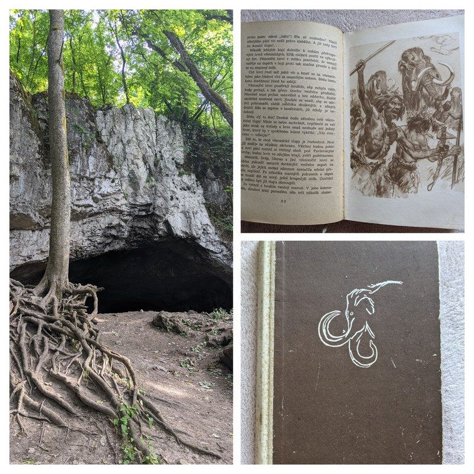
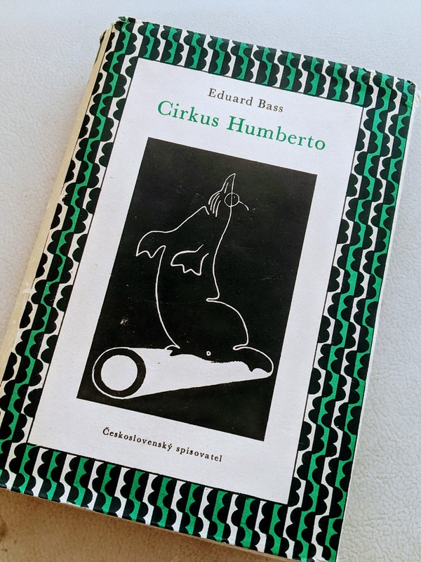
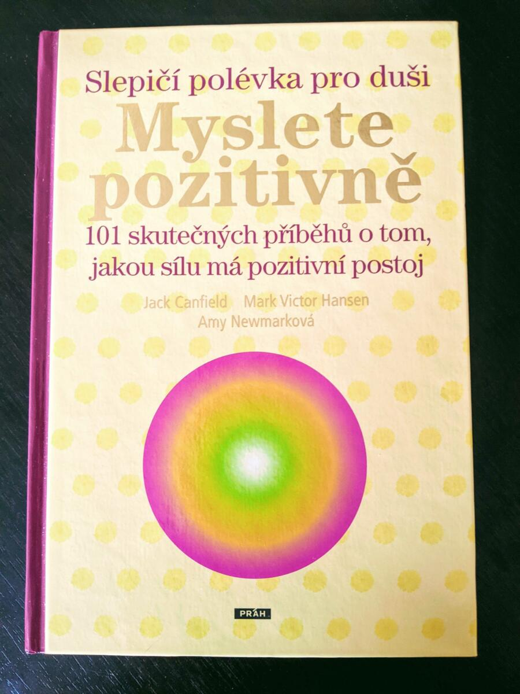

Jó, léto… Tohle léto jsem si rozečetla naprosto nesmyslné množství knih (což normálně vůbec nedělám), tak jsem docela ráda, že jsem se aspoň u některých dobrala zdárného konce a že tu vůbec mám dneska o čem psát :-)
Eduard Štorch - Lovci mamutů
Kniha, k jejíž četbě mě inspirovala návštěva tajuplné jeskyně Pekárna, do níž autor zasadil část děje svého slavného díla. Docela mě překvapuje, že Lovci mamutů jsou vnímání jako kniha pro děti, protože přiznejme si - život v pravěku nebyl zrovna peříčko a Štorch se nevyhýbá ani několika drsnějším scénám. Na druhou stranu myslím, že pro dnešní děti s neomezenými možnostmi už Lovci mamutů asi budou postrádat onen punc dobrodružství, který v této knize nacházely starší generace. Každopádně jako vzdělávací materiál, který by jim mohl přiblížit, jak se v pravěkých dobách lidem žilo, Lovci mamutů určitě poslouží lépe, než ledasjaká učebnice dějepisu.

Eduard Bass - Cirkus Humberto
“Svět je, chlapče, přec jen dobrý a život je krásný,” řekl Karas dojat.
“Taky jsem na to myslel,” odpověděl šednoucí už nástupce Steenhouwerův, “ale ono to bude tak: každý člověk si vytváří svůj svět a nakonec se setká s takovým, jaký kolem sebe utvořil.”
Další pokořenou klasikou tohoto léta se pro mě stalo toto kultovní dílo o lidech z maringotek, které mě koneckonců inspirovalo i ke zhlédnutí stejnojmenného seriálu, který jsem viděla naposledy jako dítě. Ten je velmi zdařilý, hvězdně obsazený a knihy se drží věrně, takže pokud se vám zrovna nechce číst, je to určitě dobrá alternativa. Byť může román svým rozsahem (cca 500 stran) nahnat leckterému čtenáři hrůzu, nemusíte se bát, že by vás děj nestrhnul. Pouze v části, kde vedení cirkusu přebírá Vašek Karas a je tam více popisných pasáží, mi přišlo, že kniha trochu ztrácí dech, ale závěr už měl opět to správné tempo. Román překvapí autorovou mimořádnou znalostí cirkusového prostředí, s níž vylíčil hořko-sladký život lidí v manéži. Pro mě vyzníval Cirkus Humberto trochu melancholicky - snad je to i tou smutnou dobou, v níž vznikal, každopádně je to určitě jedna z těch českých klasik, které stojí za to si alespoň jednou za život přečíst.

J. Canfield, M. V. Hansen, A. Newmarková - Myslete pozitivně
“Musíme být ochotni zbavit se představ o životě, který jsme si naplánovali, abychom mohli žít život, který na nás čeká.”
Joseph Campbell
Kniha z edice Slepičí polévka pro duši, která vskutku dělá čest svému názvu, nese podtitul 101 skutečných příběhů o tom, jakou sílu má pozitivní postoj a můžete si být jisti, že vás opravdu pozitivně naladí a vleje vám do žil trochu toho optimismu. Sama jsem ji četla v různých více či méně nelehkých etapách své mateřské a opravdu mě mnohdy příkladem skutečných lidí dokázala pohladit po duši a dodat potřebnou motivaci nebo sílu podívat se na svou situaci z jiné perspektivy.
